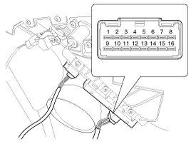
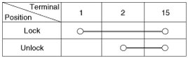
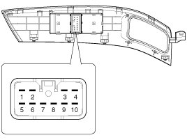
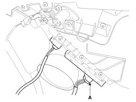
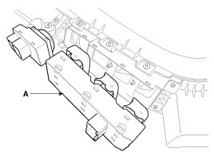

Power Door Lock Switch: Service and Repair
Inspection
Driver Door Lock Switch Inspection
1. Disconnect the negative (-) battery terminal.
2. Remove the front door trim panel.
3. Disconnect the connector from the power window switch module.

4. Check for continuity between the terminals in each switch position according to the table.

Assistant Door Lock Switch
1. Disconnect the negative (-) battery terminal.
2. Remove the front door trim and power window switch module.
3. Disconnect the connector from the switch.

4. Check for continuity between the terminals in each switch position according to the table.
Removal
1. Disconnect the negative(-) battery terminal.
2. Remove the front door trim.
3. Disconnect the power window switch module connector(A) from the door trim.

4. Remove the power window switch(A) with pushing mounting hook.

NOTE:
Be careful not to damage door trim panel and door module mounting hooks.
Installation
1. Install the power window switch.
2. Connect the connector and install the front door trim panel.